No records match.
 The BoyThe Reckoner · The Answered Boy · The Uncrowned · The Unhastening · Ardwen's Wielder · Case 0000
The BoyThe Reckoner · The Answered Boy · The Uncrowned · The Unhastening · Ardwen's Wielder · Case 0000 ArdwenObserver 000 · The Delivering Woman · The Sky-Answerer · The Unhastening · Case 0000
ArdwenObserver 000 · The Delivering Woman · The Sky-Answerer · The Unhastening · Case 0000 ValeriaThe Unlifted · the sword · Case 0000
ValeriaThe Unlifted · the sword · Case 0000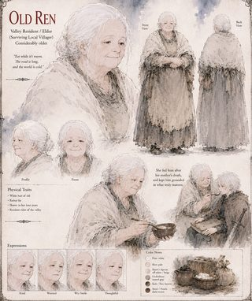
Old RenValley elder · Case 0000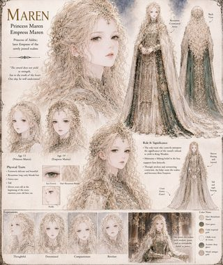
MarenPrincess Maren · later Empress Maren · Case 0000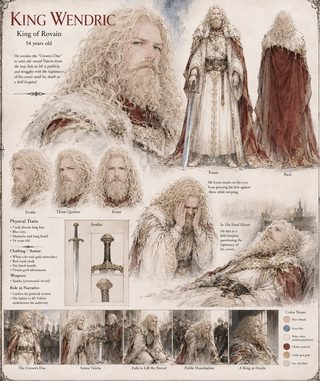
King WendricKing of Rovain · Case 0000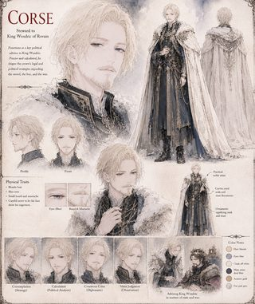
CorseSteward to King Wendric of Rovain · Case 0000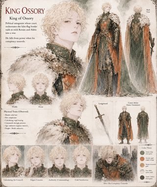
King OssoryKing of Ossory · Case 0000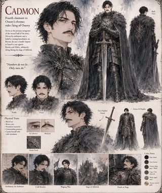
CadmonFourth claimant to Ossory's throne · later King of Ossory · Case 0000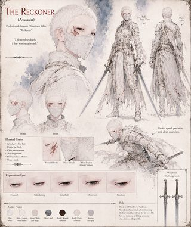
The Reckoner (Assassin)Professional assassin · contract-name “Reckoner” · Case 0000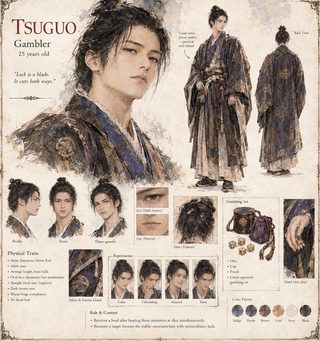
TsuguoGambler · 25 years old · Case 4099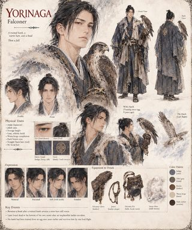
YorinagaFalconer · Case 4099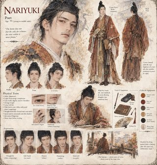
NariyukiPoet · 30s · Case 4099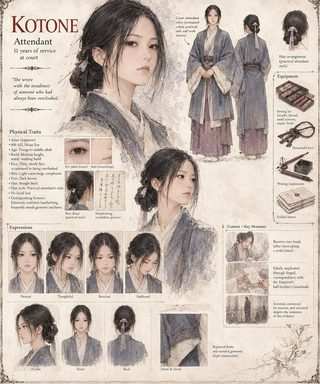
KotoneAttendant · 11 years of service at court · Case 4099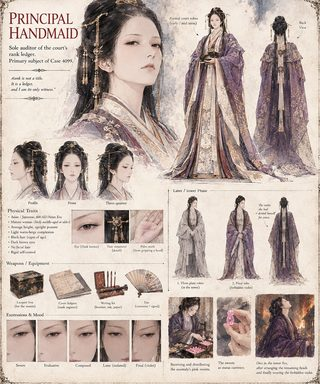
The Principal HandmaidSole auditor of the court's rank ledger · primary subject of Case 4099 · Case 4099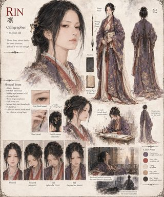
RinCalligrapher · ~35 years old · Case 4099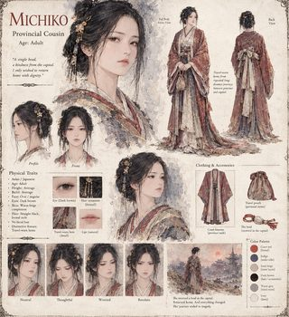
MichikoProvincial Cousin · adult · Case 4099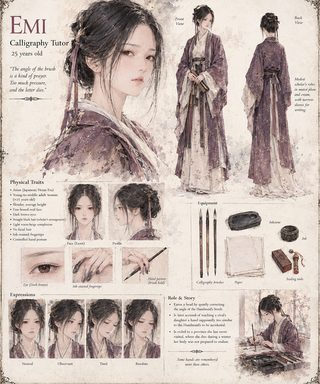
EmiCalligraphy Tutor · 25 years old · Case 4099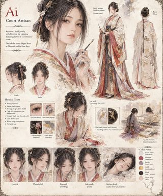
AiCourt Artisan · Case 4099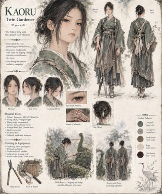
KaoruTwin Gardener · 20 years old · Case 4099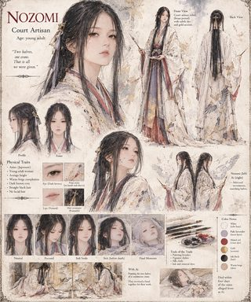
NozomiCourt Artisan · young adult · Case 4099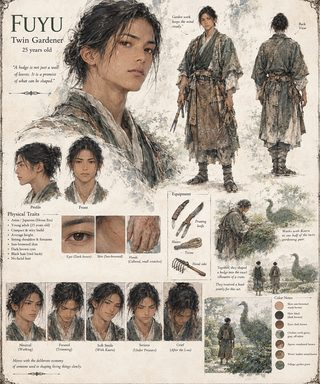
FuyuTwin Gardener · 25 years old · Case 4099 The ObserverEnvoy / Custodian Observer · Terrarium 812-G (Case 4099) · Deployment Archetype 04 · Case 4099
The ObserverEnvoy / Custodian Observer · Terrarium 812-G (Case 4099) · Deployment Archetype 04 · Case 4099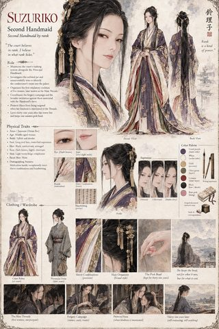
SuzurikoSecond Handmaid, by rank · Case 4099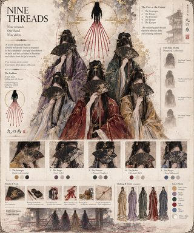
The Nine ThreadsA secret retaliatory faction · Case 4099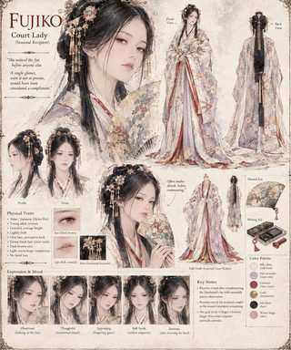
FujikoCourt Lady · seasonal recipient · Case 4099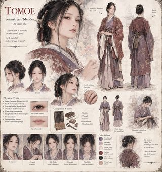
TomoeSeamstress / Mender · 25 years old · Case 4099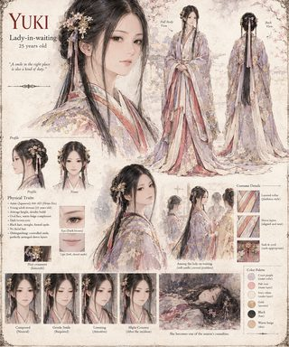
YukiLady-in-waiting · 25 years old · Case 4099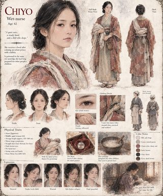
ChiyoWet-nurse · 42 years old · Case 4099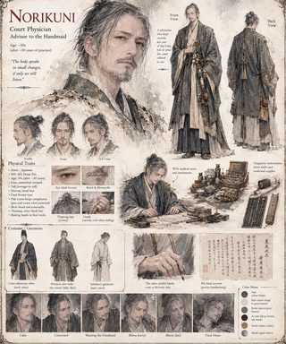
NorikuniCourt Physician · Advisor to the Handmaid · Case 4099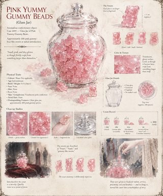
The SweetsPink Yummy Gummy Beads · the Catalyst of Case 4099 · Case 4099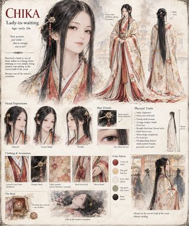
ChikaLady-in-waiting · early 20s · Case 4099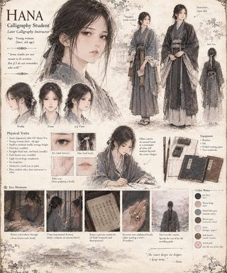
HanaCalligraphy Student, later Instructor · Case 4099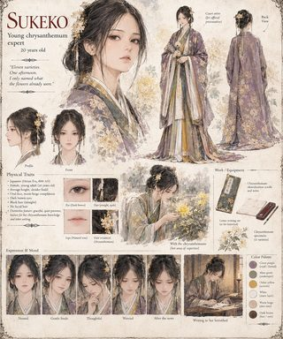
SukekoChrysanthemum Expert · 20 years old · Case 4099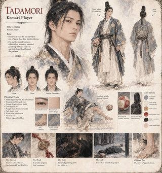
TadamoriKemari Player · Case 4099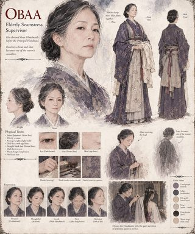
ObaaElderly Seamstress Supervisor · Case 4099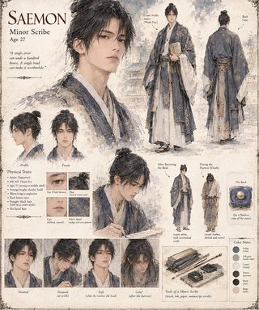
SaemonMinor Scribe · 27 years old · Case 4099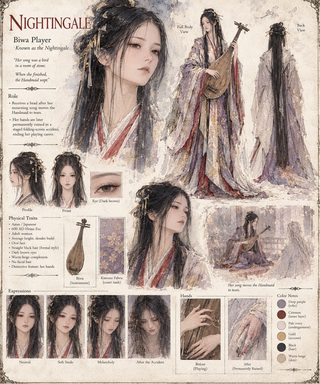
NightingaleBiwa Player · known as the Nightingale · Case 4099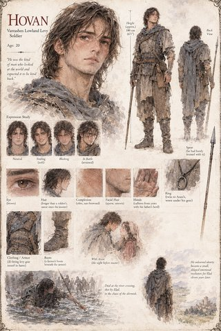
HovanVantashen Lowland Levy · 20 years old · Case 0157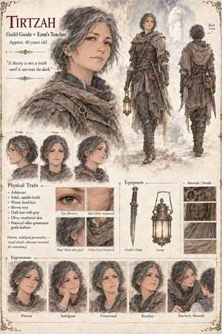
TirtzahGuild Guide · Ezra's Teacher · ~40 years old · Case 0157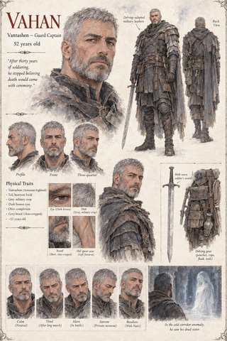
VahanVantashen Guard Captain · 52 years old · Case 0157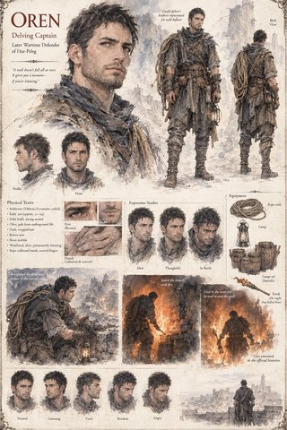
OrenDelving Captain · later Wartime Defender of Har-Peleg · Case 0157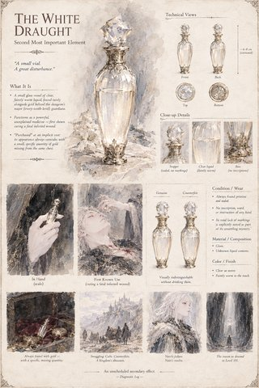
The White DraughtThe Catacomb's second most important element · an unscheduled secondary effect · Case 0157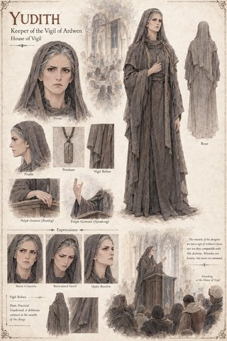
YudithKeeper of the Vigil of Ardwen · House of Vigil · Case 0157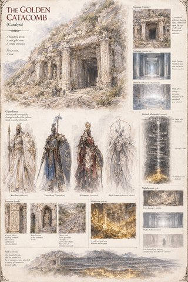
The Golden CatacombThe Catalyst of Case 0157 · a hundred levels, one entrance · Case 0157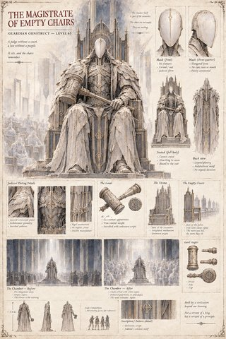
The Magistrate of Empty ChairsGuardian Construct · Level 65 · Case 0157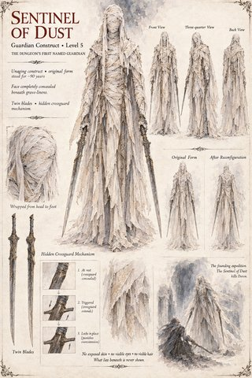
Sentinel of DustGuardian Construct · Level 5 · the Catacomb's first named guardian · Case 0157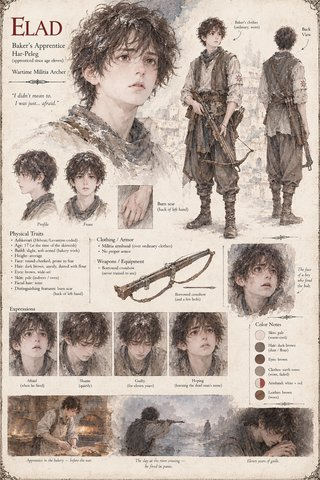
EladBaker's Apprentice, Har-Peleg · Wartime Militia Archer · Case 0157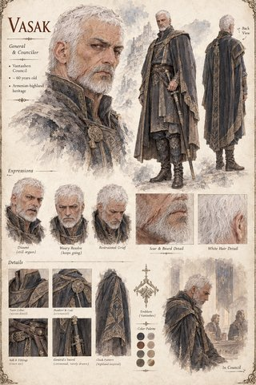
VasakGeneral & Councilor · Vantashen Council · Case 0157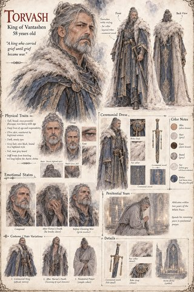
TorvashKing of Vantashen · 58 years old · Case 0157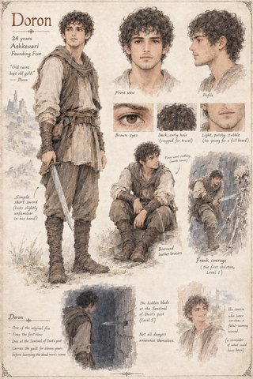
DoronFounding Five · Ashkevari · 24 years old · Case 0157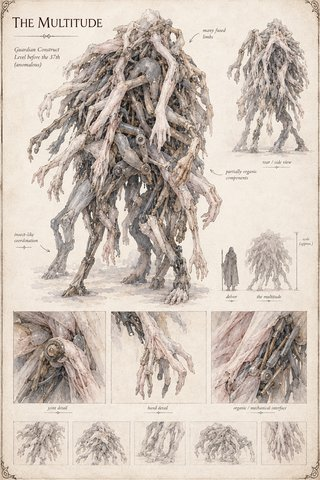
The MultitudeGuardian Construct · the level before the 37th, anomalously · Case 0157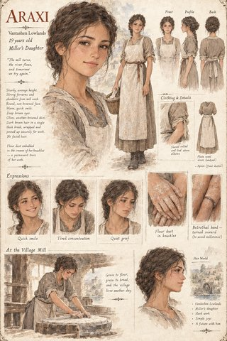
AraxiMiller's Daughter · Vantashen Lowlands · 19 years old · Case 0157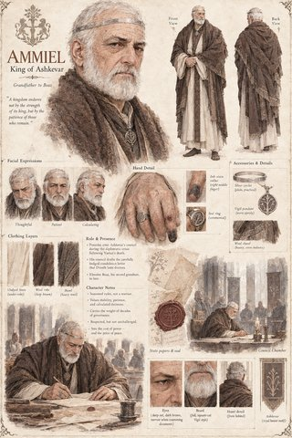
AmmielKing of Ashkevar · grandfather to Boaz · Case 0157- The Tide That Forgot the SeaGuardian Construct · Level 20 · Case 0157
- PeledPorter · hired for Nairi's Level 101 expedition · Case 0157
- The Weaver Who Outlived Her ThreadGuardian Construct · Level 85 · Case 0157
- DorethHierarch of Solan · Vantashen Threefold · Case 0157
- The Ember JudgeGuardian Construct · Level 40 · also called the Reckoning or the Trial of Solan · Case 0157
- The Hundred-Handed ReckonerGuardian Construct · Level 100 · the final level before 101 · Case 0157
- The Widow of the Tenth HallGuardian Construct · Level 10 · Case 0157
- The NursemaidGuardian Construct · Level 54 · guards the approach to the anomalous 55th · Case 0157
- VartazPrince of Vantashen · Torvash's youngest child · age 20 at death · Case 0157
- TamirFounding Five · Ashkevari · 26 years old · Case 0157
- BoazHouse Ashkevar · grandson to King Ammiel · later King-consort of Ashkevar · Case 0157
 The ObserverThe Dungeon Manager · the Catacomb's builder and sole operator · seated at Level 101 · Case 0157
The ObserverThe Dungeon Manager · the Catacomb's builder and sole operator · seated at Level 101 · Case 0157- BerelFounding Five · grave-goods dealer, Har-Peleg · Case 0157
- Level 71 GuardianCultivator-built construct · stands before the anomalous 72nd level · Case 0157
- NetzerFounding Five · Ashkevari shepherd · Case 0157
- EzraGuild Guide · foremost theorist of the Catacomb · age 48 · Case 0157
- ShiraFounding Five · later Delving Captain · Har-Peleg's first true captain · Case 0157
- NairiPrincess, later Queen of Vantashen · Queen-consort of Ashkevar · Sole Ruler · Case 0157
- AmitaiCourt Scribe · Vantashen joint court, under Queen Nairi · Case 0157
- OsricSteward of House Ironhold · served three generations of dukes · Case 4417
- WrenChancellor of Solis · served three monarchs · age unknown · Case 4417
- OpheliaLady of the Queen's Household in Solis · Aurelia's messenger · Case 4417
- IsetFormer Lady's Maid to the Queen · retained by Beatrice as a “Woman of Business” · Case 4417
- FenricLord of the Western Passes of Ironhold · husband to Isolde · Case 4417
- BeatriceDuchess of Ironhold, later Duchess-Regnant · wife to Aldous · Case 4417
- CorvinBaron of the Eastern Marches · Case 4417
- AldousDuke of Ironhold · 56 years old · husband to Beatrice · Case 4417
 VaneEnvoy/Observer, Case 4,417 · “the Wanderer” · deployed disguised as a hermit · Case 4417
VaneEnvoy/Observer, Case 4,417 · “the Wanderer” · deployed disguised as a hermit · Case 4417- IsoldeLady of Ironhold · wife to Fenric · sister to the Lord of House Vell · Case 4417
- BallardSer Ballard · Commander of Solis's Standing Army · Case 4417
- AmbroseHigh Cleric of the Order of the Pale Cloth · Case 4417
- AureliaQueen of Solis · reigning eleven years · Case 4417
- KaelenBaron of House Skarth · 25 years old · twin brother to Yvaine · Case 4420
- YvaineLady of House Skarth · 25 years old · twin sister to Kaelen · Case 4420
- Duke MarosDuke of the Northern March · Lord of Karhold Keep · 45 years old · Case 4420
- Duke VaneDuke of the Southern March · Lord of Vane Keep · Case 4420
- CorvusSir Corvus · knight of the King's own bodyguard · Case 4420
 Observer 814Envoy of the Cultivators · “the Dragon-Speaker” · Case Study 4,420 · Case 4420
Observer 814Envoy of the Cultivators · “the Dragon-Speaker” · Case Study 4,420 · Case 4420- SorenShadow thief · 38 years old · of Byzantium · Case 4420
- BlakkDuke of Mud-Reach · later High Sovereign of Illumaria · reigned 41 years · Case 4555
- AstraeaDuchess, House Astraea · later Queen of Illumaria · Case 4555
- CassianDuke Cassian, House Cassian · Noble Claimant to the throne of Illumaria · Case 4555
- IgnisArchduke Ignis, House Ignis · Eldest Claimant to the throne of Illumaria · Case 4555
- AethelgardKing of the High Realm of Illumaria · Deceased · Case 4555
- SarelHigh Pontiff of Sol-Invictus · Case 4555
- HarnCaptain Harn · Captain of the Guard to Duke Blakk · Case 4555
- PetrinHeir Presumptive · later King of Illumaria · Case 4555
- PriscaBody-servant to Duchess Astraea · Case 4555
- FennPeddler / Merchant · Case 4555
- Anchorite of the Drowned RoadDrowned Road Sect · Holy Ascetic · Case 4555
 Observer 902Field Observer, Cultivator Envoy Corps · Case 4555
Observer 902Field Observer, Cultivator Envoy Corps · Case 4555- Mei SuwenThe Reckoner · Court Reckoner of Yujing · 28 years old · Case 4438
- YuePrince Yue · third son of the Yongkang Emperor · later Emperor Yue · 40 years old · Case 4438
- The Yongkang EmperorEmperor of Yan · ninth year of his reign · Deceased · Case 4438
- Ren DuoFisherman of Nine Bends · eleven years on the flooded ruins · Case 4438
- The Heavenly Thunder-SerpentAn Electric Eel, Eight Feet Long · the Catalyst of Case 4438 · Case 4438
 Elder PengObserver 403 · Hermit of Nine Bends · 141 local years in the ruins · Case 4438
Elder PengObserver 403 · Hermit of Nine Bends · 141 local years in the ruins · Case 4438- Wan-erThe Yongkang Emperor's granddaughter · Prince Yue's daughter · 7 years old · Case 4438
- Sun LinInspector of Palace Accounts · eunuch · eleven years in post · Case 4438
 Kang YiGrand Marshal · commander of the northern garrisons · nineteen years of service · Case 4438
Kang YiGrand Marshal · commander of the northern garrisons · nineteen years of service · Case 4438- Zhou XuanChief Alchemist of the Yan Court · thirty years of elixirs · Deceased · Case 4438
- Fu BaishiCourt Alchemist · successor to Zhou Xuan · Case 4438
- Physician KaoCourt Physician · investigator · Case 4438
- Zheng KuiMinister of the Court of Tribute · Case 4438
- Meng KuoGeneral · Commander of the Western Passes · nineteen years in command · Case 4438
- Pei RongDuke of Pei · second to enter the Second Trial · Deceased · Case 4438
- Du HengWarlord of the Southern Salt Marshes · Case 4438
- Master BaiMaster of the Nine-Fold Mountain · cultivator · 66 years old · Case 4438
- Zhuo ShengMerchant · 45 years old · son of a tanner · Case 4438
- Yun WeiImperial Consort · the first courtier to touch the water · Case 4438
- DharmasenaEmperor of Amritavana · Ninth of His Name · Husband of Chandralekha · Case 0188
- ChandralekhaEmpress of Amritavana · Deceased · Namesake of the Vow · Case 0188
- HaridasaPalace Gardener · Imperial Household of Amritavana · Case 0188
 SomadattaEnvoy of the Cultivators · Envoy Archetype 03 · the Trader · Case 0188
SomadattaEnvoy of the Cultivators · Envoy Archetype 03 · the Trader · Case 0188- The Eternal-Grief LilyCultivator Designation: Lilium Immortalis · Mythic Class · Local Name: Anantavrata · Case 0188
- VaidyanathaCourt Physician of Kunjaravana · Case 0188
- KamaliniBride of Amritavana · Later, an Elderly Widow · Case 0188
- DhumraGrey Cat · Companion to Kamalini · Case 0188
- GovindaFarmer Along the Shonavati · Father of a Daughter Nearing Marriage · Case 0188
- BhadrakaFarmer Along the Shonavati · the Man Who Refused · Case 0188
- DhanapalaMerchant · Grain-Futures Trader of the Capital · Case 0188
- RavisenaSon of Dharmasena · Regent, Later Emperor of Amritavana · Case 0188
- GaribaldCount of Vardane · 31 when the clockmaker comes · Case 2140
 Observer 419Envoy/Observer, Case 2,140 · publicly an itinerant clockmaker · Case 2140
Observer 419Envoy/Observer, Case 2,140 · publicly an itinerant clockmaker · Case 2140- TeudisMiller of Vardane's county mill · inherited the post, and his father's bad knees · Case 2140
- Garibald's MotherDeceased · mother of Count Garibald · Case 2140
- LandulfBaron of Verrasco · 19 at his inheritance · Case 2140
- GiselaBaron Landulf's daughter · 17 at her introduction · Case 2140
- AnsfridHeir to Verrasco, implied · Landulf's older brother · Case 2140
- GrimoaldDuke of Trevano · 46 when the rumor reaches him · Case 2140
- GisulfEngineer in Duke Grimoald's service · twice told him a design would fail, and was right both times · Case 2140
- Grimoald's FatherLombard collector · died in his 60s · Case 2140
- Grimoald's WifeWife of Duke Grimoald · early-to-mid 50s · Case 2140
- AdelradaElder of House Ratchis · 78 years old · Case 2140
- VitalisNotary retained by House Ratchis · 55 years old · Case 2140
- RanulfMember of House Ratchis · Elder Adelrada's great-nephew · 26 · Case 2140
- Eldest Witness of the WritWitness of the Writ · senior-most of the clerical judges · Case 2140
- HuairenKing of Qinghe · forty-one years on the throne · 79 years old · Case 3115
- MeilanQueen of Qinghe · 30 years old · later Regent · Case 3115
- HuaiyuPrince, half-brother to King Huairen · March-Lord of Beiyan · 38 years old · Case 3115
- The Listening WaterA Stoppered Glass Bottle, Five Measured Sips · the Catalyst of Case 3115 · Case 3115
- SuyinMaid in Queen Meilan's Household · third year of service · 20 years old · Case 3115
- MingxuanCourt Alchemist to King Huairen · 44 years old · later of the peace council under the Jinlu Concord · Case 3115
- CaoSteward to Queen Meilan's Household · 52 years old · Case 3115
- DuanChamberlain of the Jinlu Court · 83 years old · served three kings before Huairen · Case 3115
- JianChancellor · Queen Meilan's Chief Political Minister · 56 years old · Case 3115
- PeizhiWarden of the Crown, Jinlu Temple · 58 years old · Case 3115
- YanchengCourt Poet · 31 years old · Case 3115
- ChunhuiLady-in-Waiting to Queen Meilan · 23 years old · Case 3115
- The PhysicianPalace Physician · 47 years old · unrelated to Mingxuan's own inquiry · Case 3115
- The Kitchen BoyKitchen Worker, Palace of Jinlu · 14 years old · Case 3115
- The CustodianCultivator Terrarium-Oversight Staff · appears 32–34 · Case 3115
- ZhuoGeneral, Commander of the Garrison at Wanling · 65 years old · Case 3115
- RaoYoung Officer, Loyalist Army at Wanling · 26 years old · Case 3115
- The Soldier Who Killed HuaiyuSoldier, Queen's Garrison · 17 years old · Case 3115
- The Herald (White Pennant)Herald in the Crown's Service · 29 years old · Case 3115
- The Under-StewardUnder-Steward, Palace Kitchens of Jinlu · 39 years old · Case 3115
- The Scribe's ApprenticeScribe's Apprentice, from an Unnamed Village · 16 years old · Case 3115
- Duke of Yanshui's Third SonSon of the Duke of Yanshui · inheritor of the Yanshui dukedom under the Father's Reckoning · Case 3115
- XiaobaoKing Huairen's Lapdog · approximately 4 years old during the novel's main action · Case 3115
 Observer 471Cultivator Field Envoy · “the Salt-Root Woman” · Case 3115 · Case 3115
Observer 471Cultivator Field Envoy · “the Salt-Root Woman” · Case 3115 · Case 3115- BardasLord of Charsianon · mid-40s to early 50s · reconstructed · Case 0156
- TheodoraLady of Charsianon · 37–42 years old · Case 0156
- The Carbon EchoCatalyst · automated sub-atomic bio-reconstruction beacon · Hemiakmon Ridge · Case 0156
 The Quiet OneCustodian Observer · appears 11–13 years old · actual age immeasurable · Case 0156
The Quiet OneCustodian Observer · appears 11–13 years old · actual age immeasurable · Case 0156- Keeper PhotiosKeeper of the Dorylaion Vigil · early 60s · Case 0156
- Lord LeoNeighboring lord · mid-40s · political leader of the coalition against Charsianon · Case 0156
- Kyr SymeonKnight of the Silver Reliquary · one of the Twelve · late 30s · Case 0156
- Kyr NiketasKnight and master swordsman · one of the Twelve · around 50 years old · deceased · Case 0156
- Kyr AndronikosKnight of Charsianon · one of the Twelve · early 40s · deceased · Case 0156
- LoukasSpearman, later executioner · early 30s · Case 0156
- MeliasMercenary captain · mid-50s · Case 0156
- Brother IgnatiosPriest sent by Keeper Photios · late 20s · Case 0156
- GeorgiosGoatherd · 19 years old · Case 0156
- PetrosSteward of Charsianon · mid-50s · Case 0156
- BasileiosSeneschal of Charsianon · in his 50s · Case 0156
- ArtavasdosTrader in curiosities, scavenger · mid-40s · Case 0156
- MarinaWidow tenant · 30s–40s · Case 0156
- ZoeCourt fool · 30s · Case 0156
- StephanosCastle guard · early 30s · Case 0156
- IoannesSquire to Lord Bardas · 14 years old · Case 0156
- TheoktistosArms-master of the garrison · 58 years old · Case 0156
- KassiaWife of Kyr Symeon · 37 years old · Case 0156
- IsidorosFerryman at the Charsianon ford · apparent age 50s · Case 0156
- Lord ConstantineRegional lord of Psychrolimne · 58 years old · Case 0156
- Lady AnastasiaLady of Karyopolis · 40s · Case 0156
- ArdwenThe Unhastening · the Sky-Answered · goddess of the Vigil of Ardwen · Case 0156
 The AnchoriteAnchorite of the Vigil of Ardwen · enclosed at nineteen · approx. 30 years old · Case 0000B
The AnchoriteAnchorite of the Vigil of Ardwen · enclosed at nineteen · approx. 30 years old · Case 0000B- AvelineEmpress of Pax Aldrovana · 39 years old · Case 0000B
- HalvardEmperor of Pax Aldrovana · consort to Empress Aveline · 41–44 years old · Case 0000B
- VasarionEmperor of the Corvane Imperium · 46 years old · Case 0000B
- AimericDuke of Vosmark · leads the second siege of Ardenwake · 38 years old · Case 0000B
- GanethMarshal-Priest of Cassoria · fourth siege of Ardenwake · 49 years old · Case 0000B
- KestKest the Anointed · leader of the Bright Remnant warband · late 30s · Case 0000B
- MassinenWarlord of the Tazenna Reach · seventh siege of Ardenwake · 67–70 years old · Case 0000B
- BerantChief Engineer, Corvane Imperium · 51–54 years old · Case 0000B
- DorenzoPrince of Solvarre · 32 years old · Case 0000B
- CorseSteward to King Wendric of Rovain · 55 years old · Case 0000B
- Wendric's WifeQueen of Rovain · 31–34 years old · Case 0000B
- Wendric's SonHeir to the throne of Rovain · never crowned · 11 years old · Case 0000B
- YorbulanKhagan of the Sarnak Horde · first siege of Ardenwake · 48 years old · Case 0000B
- BranimirPrince of Belnograd · mid-30s · Case 0000B
- CorenFirst Factor of the Merchant-Council of Velmoro · early 50s · Case 0000B
- VerrinCaptain, the Free Company of the Blind Ford · 42 years old · Case 0000B
- The Wounded ArcherArcher in Aldwick's defense · 16 years old · Case 0000B
- The Vault GuardPalace Guard, vault entrance · Marrowgate · 28 years old · Case 0000B
- PieroSenior apprentice to the Reckoner · later Regent of Illumaria and first High Pontiff · 21 at the story's opening · Case 2365
 SeverinThe Reckoner of Vallombra, sixth of that name · Observer 117, Custodian of record · appears about fifty · Case 2365
SeverinThe Reckoner of Vallombra, sixth of that name · Observer 117, Custodian of record · appears about fifty · Case 2365- MarcelloMagistrate's son · senior apprentice · the Order's first Examiner · 22–23 at the story's opening · Case 2365
- LiviaPrincess of Vallombra, then Queen of Illumaria · 9 at her coronation, 21 at the first Judgment · reigns 51 years · Case 2365
- FaustinKing of Vallombra, called ‘the Fortunate’ · widower · 49 years old · Case 2365
- SigridWarden of the Winter Stores · Staff-Keeper of Verrenhal · 40 years old · later regent for eleven years · Case 2365
- ArneSigrid's son · 17 at the Blinding · lives to eighty · Case 2365
- RagnvaldKing of Verrenhal · approx. 45 years old · Case 2365
- FulvioLord of the Weirs · one of the sixteen lords of Vallombra · approx. 54 years old · Case 2365
- RufioCaptain of the Edge · 50 years old · Case 2365
- NardoNotary, formerly of the Saltway courts · later the Roll's first Registrar of Names · approx. 52–55 · Case 2365
- CostanzaExaminer of the Order · Marcello's chosen successor · late 20s · Case 2365
- AldoNovice of the Last Order · later Second High Pontiff · 9 years old as introduced · Case 2365
- LinoCopyist of the Bell and Granary orders · 14 years old, in his second week of service · Case 2365
- NinaDaughter of the Lower Granary clerk · Piero's sister · 9 years old at her death · Case 2365
- TitoPlough-boy · nephew of the two brothers who draw the ceremonial plough · 13 years old · Case 2365
- The GoldsmithPalace goldsmith of Vallombra · approx. 47 years old · Case 2365
- AnselmoMaster glassmaker of the Glassmakers' Row, Illumaria · approx. 52 years old · Case 2365
- The Granary PhysicianPhysician of the Granary order · approx. 44 years old · Case 2365
- The Tanner's WidowWidow of Torrecalda's tanning trade · 35–38 years old · Case 2365
- The Nameless Girl at the RoundA child in the crowd at the First Furrow · about 10–12 years old · Case 2365
- The Senior Clerk of the HallSenior clerk overseeing the compiling of the Roll · approx. 56 years old · Case 2365
- The InterpreterInterpreter with Sigrid's party at the Saltway Gate · approx. 38 years old · Case 2365
- The HeraldHerald, clerk of the Gate order · approx. 24 years old · Case 2365
 Observer 618Cultivator Envoy and Custodian of record for Case 2231 · a mute stonecutter, called the Dumb Mason by the shrine's priests · appears about 45–50 · Case 2231
Observer 618Cultivator Envoy and Custodian of record for Case 2231 · a mute stonecutter, called the Dumb Mason by the shrine's priests · appears about 45–50 · Case 2231 The Kiyote PairCatalyst of Case 2231 · the Ordeal Stone of Mikusa and the Doorstone of Vilarnau · set eleven and twelve years before the opening · Case 2231
The Kiyote PairCatalyst of Case 2231 · the Ordeal Stone of Mikusa and the Doorstone of Vilarnau · set eleven and twelve years before the opening · Case 2231 HigaideTomobe no Higaide · Captain of the Left Gate Guard of Himuro, Sixth Rank (lower grade) · 34 at the opening, 53 at the close · called Higa, Lo Higa, the Moon-Man, the Dead Man of the Doorstone, the Eastern Angel and Saint Two-Swords · Case 2231
HigaideTomobe no Higaide · Captain of the Left Gate Guard of Himuro, Sixth Rank (lower grade) · 34 at the opening, 53 at the close · called Higa, Lo Higa, the Moon-Man, the Dead Man of the Doorstone, the Eastern Angel and Saint Two-Swords · Case 2231 ShizukaTomobe no Shizuka · wife of Tomobe no Higaide, daughter of a provincial scholar · 29 years old at the story's opening · Case 2231
ShizukaTomobe no Shizuka · wife of Tomobe no Higaide, daughter of a provincial scholar · 29 years old at the story's opening · Case 2231 TsuruDaughter of Tomobe no Higaide and Shizuka · 6 years old · later a tall woman who keeps the lacquer box · Case 2231
TsuruDaughter of Tomobe no Higaide and Shizuka · 6 years old · later a tall woman who keeps the lacquer box · Case 2231 JōkeiWarden-Priest of Mikusa Shrine · 60 at the story's opening, 79 when the Stone comes apart · Case 2231
JōkeiWarden-Priest of Mikusa Shrine · 60 at the story's opening, 79 when the Stone comes apart · Case 2231 The Three Senior Priests of MikusaSenior priests under Warden Jōkei · witnesses at the ordeal court · 35, 48 and 55 by their sheet · Case 2231
The Three Senior Priests of MikusaSenior priests under Warden Jōkei · witnesses at the ordeal court · 35, 48 and 55 by their sheet · Case 2231- The Priests' Boys of MikusaBoys who serve the priests of Mikusa · unnamed · 10–13 by their sheet · Case 2231
 SukenoriKan no Sukenori · Right Minister of Himuro · about 62 years old by his sheet · Case 2231
SukenoriKan no Sukenori · Right Minister of Himuro · about 62 years old by his sheet · Case 2231 SadamuneKi no Sadamune · Secretary of the Bureau of Inquiry · 43 years old · later Governor of a northern province · Case 2231
SadamuneKi no Sadamune · Secretary of the Bureau of Inquiry · 43 years old · later Governor of a northern province · Case 2231 The Deputy Minister of the LeftDeputy Minister of the Left · unnamed · about 52 years old by his sheet · Case 2231
The Deputy Minister of the LeftDeputy Minister of the Left · unnamed · about 52 years old by his sheet · Case 2231 KanemichiOno no Kanemichi · rice-warden of the Right Ministry's eastern granary · 52 years old · Case 2231
KanemichiOno no Kanemichi · rice-warden of the Right Ministry's eastern granary · 52 years old · Case 2231 The Bureau ClerkClerk of the Bureau of Inquiry · unnamed · about 26 years old by his sheet · Case 2231
The Bureau ClerkClerk of the Bureau of Inquiry · unnamed · about 26 years old by his sheet · Case 2231 KaneyoshiGranary clerk of the Left Ministry · the first man the Stone took · about 38 years old by his sheet · Case 2231
KaneyoshiGranary clerk of the Left Ministry · the first man the Stone took · about 38 years old by his sheet · Case 2231 KurigeChestnut pony of the Festival of the Small Bow · named only by a stablehand in a hurry · 7 years old by his sheet · Case 2231
KurigeChestnut pony of the Festival of the Small Bow · named only by a stablehand in a hurry · 7 years old by his sheet · Case 2231 KiyomaroSugino no Kiyomaro · grandson of the Minister of the Left · 9 years old · Case 2231
KiyomaroSugino no Kiyomaro · grandson of the Minister of the Left · 9 years old · Case 2231 AzukiThe Minister of the Left's household cat · named for the red bean · a round young cat at the Festival · Case 2231
AzukiThe Minister of the Left's household cat · named for the red bean · a round young cat at the Festival · Case 2231 KinjiGroom at the Festival of the Small Bow · the only man who saw the cat · 40 years old · Case 2231
KinjiGroom at the Festival of the Small Bow · the only man who saw the cat · 40 years old · Case 2231 ArikuniSugino no Arikuni · Minister of the Left of Himuro, Senior Second Rank · author of the Law of the Clean Hand · grandfather of Kiyomaro · 66 at the opening, 71 when he reads the report · Case 2231
ArikuniSugino no Arikuni · Minister of the Left of Himuro, Senior Second Rank · author of the Law of the Clean Hand · grandfather of Kiyomaro · 66 at the opening, 71 when he reads the report · Case 2231 YasutsuguŌmi no Yasutsugu · Examiner of the Bureau of Inquiry, Sixth Rank · called the Sparrow Examiner · 50 years old · Case 2231
YasutsuguŌmi no Yasutsugu · Examiner of the Bureau of Inquiry, Sixth Rank · called the Sparrow Examiner · 50 years old · Case 2231 TamenagaSteward of the household of the Minister of the Left · forty-two years in Arikuni's service at the opening · about 75 by his sheet, 80 at his death · Case 2231
TamenagaSteward of the household of the Minister of the Left · forty-two years in Arikuni's service at the opening · about 75 by his sheet, 80 at his death · Case 2231 The Examiner's ReportObject · eleven folded sheets, the Bureau of Inquiry's report on the death of Kiyomaro · written 16 Eldren · shelved in the lower archive, not pressed · Case 2231
The Examiner's ReportObject · eleven folded sheets, the Bureau of Inquiry's report on the death of Kiyomaro · written 16 Eldren · shelved in the lower archive, not pressed · Case 2231- SōrokuProfessional false witness of the lower city of Tsukigase · fifty-odd by the manuscript, 54 by his sheet · fee, twelve bolts of silk · Case 2231
- The Plum Gate PatronsRegulars of the Plum Gate wine-house in Tsukigase's east ward · a dyer's apprentice, a fishmonger and a seller of pickled radish · 17, 45 and 70 by their sheet · Case 2231
 The Bureau OfficersOfficers of the Bureau of Inquiry · one about 40, one about 28 by their sheet · Case 2231
The Bureau OfficersOfficers of the Bureau of Inquiry · one about 40, one about 28 by their sheet · Case 2231 The Rider from the NorthMessenger of the Kurogane March garrison at Fort Shirakane · unnamed · about 16 years old by his sheet · Case 2231
The Rider from the NorthMessenger of the Kurogane March garrison at Fort Shirakane · unnamed · about 16 years old by his sheet · Case 2231 NarimuneTomobe no Narimune · Commander of the Kurogane March garrison at Fort Shirakane · Higaide's elder cousin · 40 at the opening, 42 at the north gate · Case 2231
NarimuneTomobe no Narimune · Commander of the Kurogane March garrison at Fort Shirakane · Higaide's elder cousin · 40 at the opening, 42 at the north gate · Case 2231 Old Master One-EyeOne-eyed veteran of the Kurogane marches · the old master who showed Higaide the two swords · about 65 years old by his sheet · Case 2231
Old Master One-EyeOne-eyed veteran of the Kurogane marches · the old master who showed Higaide the two swords · about 65 years old by his sheet · Case 2231 The New Left MinisterSuccessor Minister of the Left after Arikuni's resignation · unnamed · about 45 years old by his sheet · Case 2231
The New Left MinisterSuccessor Minister of the Left after Arikuni's resignation · unnamed · about 45 years old by his sheet · Case 2231 The Boy-Sovereign of HimuroSovereign of Himuro · 14 years old at the opening · abdicates into a monastery · Case 2231
The Boy-Sovereign of HimuroSovereign of Himuro · 14 years old at the opening · abdicates into a monastery · Case 2231 BertranSir Bertran de Lanta · master-at-arms of Castelmaur · knight · 38 years old · Case 2231
BertranSir Bertran de Lanta · master-at-arms of Castelmaur · knight · 38 years old · Case 2231 Bertran's SisterWidowed sister of Sir Bertran de Lanta · mother of four · valley of the Nauze · about 34 years old by her sheet · Case 2231
Bertran's SisterWidowed sister of Sir Bertran de Lanta · mother of four · valley of the Nauze · about 34 years old by her sheet · Case 2231 The Miller of VilarnauLate miller of the Mill of the Two Weirs · husband of Ermengarda, father of Gersenda and Peire · died four winters before the opening of a cough · 42 by his sheet · Case 2231
The Miller of VilarnauLate miller of the Mill of the Two Weirs · husband of Ermengarda, father of Gersenda and Peire · died four winters before the opening of a cough · 42 by his sheet · Case 2231 ErmengardaWidow of the miller of Vilarnau · keeper of the Mill of the Two Weirs · mother of Gersenda and Peire · about 38 years old by her sheet · Case 2231
ErmengardaWidow of the miller of Vilarnau · keeper of the Mill of the Two Weirs · mother of Gersenda and Peire · about 38 years old by her sheet · Case 2231 GersendaMiller's daughter · later wife of the smith's surviving son and leader of the High Ground · 16 at the story's opening, 35 at the departure · Case 2231
GersendaMiller's daughter · later wife of the smith's surviving son and leader of the High Ground · 16 at the story's opening, 35 at the departure · Case 2231- Peire (Higa the Younger)Miller's son of Vilarnau · later chronicler of the High Ground, called Higa the Younger · 8 at the arrival, 27 at the departure · Case 2231
- Lo RogThe red ox of the Mill of the Two Weirs · the worst-tempered animal in the barony · 8 years old by his sheet · Case 2231
 The Smith's SonSon of the smith of Vilarnau · later husband of Gersenda · 19 years old at the weighing · Case 2231
The Smith's SonSon of the smith of Vilarnau · later husband of Gersenda · 19 years old at the weighing · Case 2231 BernatOld Bernat · reeve of Vilarnau · 79 years old · Case 2231
BernatOld Bernat · reeve of Vilarnau · 79 years old · Case 2231 BrunissenKeeper of the tavern of Vilarnau · 40 years old · Case 2231
BrunissenKeeper of the tavern of Vilarnau · 40 years old · Case 2231 The Weigher's WidowWidow who keeps the village's tally-sticks · Vilarnau · 55 years old by her sheet · Case 2231
The Weigher's WidowWidow who keeps the village's tally-sticks · Vilarnau · 55 years old by her sheet · Case 2231 GaucelmTinker, seller of needles and relics along the Lauze · thirty years on the road · about 55 years old by his sheet · Case 2231
GaucelmTinker, seller of needles and relics along the Lauze · thirty years on the road · about 55 years old by his sheet · Case 2231 The Villagers of VilarnauThe village chorus: the cooper, the smith and his wife, a young wife three months gone, a feverish boy, a very old woman, the mill's hired boy · aged 12–85 by their sheet · Case 2231
The Villagers of VilarnauThe village chorus: the cooper, the smith and his wife, a young wife three months gone, a feverish boy, a very old woman, the mill's hired boy · aged 12–85 by their sheet · Case 2231 The MasonsMasons of the baron's household · the elder about 50, the younger about 30 by their sheet · Case 2231
The MasonsMasons of the baron's household · the elder about 50, the younger about 30 by their sheet · Case 2231 The Men-at-Arms of CastelmaurMen-at-arms and sergeants of the Barony of Castelmaur · mostly 19–40 by their sheet · Case 2231
The Men-at-Arms of CastelmaurMen-at-arms and sergeants of the Barony of Castelmaur · mostly 19–40 by their sheet · Case 2231 SicardSergeant of Castelmaur, second to the bailiff · thorough, with no particular opinions · about 40 years old by his sheet · Case 2231
SicardSergeant of Castelmaur, second to the bailiff · thorough, with no particular opinions · about 40 years old by his sheet · Case 2231 ArnautBailiff of Castelmaur · twenty years in the baron's service · 45 years old · Case 2231
ArnautBailiff of Castelmaur · twenty years in the baron's service · 45 years old · Case 2231 FolquetClerk to the bailiff of Castelmaur · later clerk of record to the Count of Rocafort's assizes · 26 at the distraint, 60 at his death · Case 2231
FolquetClerk to the bailiff of Castelmaur · later clerk of record to the Count of Rocafort's assizes · 26 at the distraint, 60 at his death · Case 2231 Aimeric of CastelmaurBaron of Castelmaur · lord of Vilarnau · brother of Guilhem · 50 years old · Case 2231
Aimeric of CastelmaurBaron of Castelmaur · lord of Vilarnau · brother of Guilhem · 50 years old · Case 2231 AdalaïsLady Adalaïs · wife of Baron Aimeric of Castelmaur · 23 years old · Case 2231
AdalaïsLady Adalaïs · wife of Baron Aimeric of Castelmaur · 23 years old · Case 2231 OrsBaron Aimeric's great grey hound · eleven years at the baron's bedside · Case 2231
OrsBaron Aimeric's great grey hound · eleven years at the baron's bedside · Case 2231 GuirautHearth-priest of Elara's small shrine at Vilarnau · keeper of six skeps of bees · 55 years old · Case 2231
GuirautHearth-priest of Elara's small shrine at Vilarnau · keeper of six skeps of bees · 55 years old · Case 2231 OdiloHierarch of the temple of Auron at Castelmaur · about 60 years old by his sheet · Case 2231
OdiloHierarch of the temple of Auron at Castelmaur · about 60 years old by his sheet · Case 2231 GuilhemYounger brother of Baron Aimeric · hostage of the Count of Rocafort · 38 years old · Case 2231
GuilhemYounger brother of Baron Aimeric · hostage of the Count of Rocafort · 38 years old · Case 2231 Count Raimon of RocafortCount of Rocafort · neighbor and rival of Castelmaur · old and lean; about 64 years old by his sheet · Case 2231
Count Raimon of RocafortCount of Rocafort · neighbor and rival of Castelmaur · old and lean; about 64 years old by his sheet · Case 2231 The Basque Guard of RocafortGuard of the Count of Rocafort, called “a Basque” · unnamed · about 40 years old by his sheet · Case 2231
The Basque Guard of RocafortGuard of the Count of Rocafort, called “a Basque” · unnamed · about 40 years old by his sheet · Case 2231 JaumeBoy of the High Ground · 9 in the second winter · Case 2231
JaumeBoy of the High Ground · 9 in the second winter · Case 2231- ElisGirl of the High Ground · great-granddaughter of Ermengarda · 6 years old in the thirty-ninth year · Case 2231
 The Hollow HermitCultivator Envoy and Custodian of record for Case 0247 · shrine-keeper at the Dragon's Tear · appears in his seventies by his sheet · Case 0247
The Hollow HermitCultivator Envoy and Custodian of record for Case 0247 · shrine-keeper at the Dragon's Tear · appears in his seventies by his sheet · Case 0247 The Dragon's TearA mountain spring near the shoulder of Mount Qingxuan · the Catalyst of Case 0247 · Mythic Class · Case 0247
The Dragon's TearA mountain spring near the shoulder of Mount Qingxuan · the Catalyst of Case 0247 · Mythic Class · Case 0247 Kuang ZhiGrandmaster and founder of the Hollow Pine Sect · 71 years old by his sheet · Case 0247
Kuang ZhiGrandmaster and founder of the Hollow Pine Sect · 71 years old by his sheet · Case 0247 Shen LieChosen disciple and heir of Kuang Zhi · later founder of the reformed Hollow Pine Sect · 27–29 by his sheet · Case 0247
Shen LieChosen disciple and heir of Kuang Zhi · later founder of the reformed Hollow Pine Sect · 27–29 by his sheet · Case 0247 Bai RongShepherd · unmarried, in debt to the county tax collector · 31 years old · Case 0247
Bai RongShepherd · unmarried, in debt to the county tax collector · 31 years old · Case 0247 Xuanwu KaiGrandmaster of the Xuanwu Sect · 52 by his sheet · Case 0247
Xuanwu KaiGrandmaster of the Xuanwu Sect · 52 by his sheet · Case 0247 Chen WuShepherd · Fang's cousin · 32–34 by his sheet · Case 0247
Chen WuShepherd · Fang's cousin · 32–34 by his sheet · Case 0247 FangShepherd · Chen Wu's cousin · 27–29 by his sheet · Case 0247
FangShepherd · Chen Wu's cousin · 27–29 by his sheet · Case 0247 Widow BaiBai Rong's mother · a widow of the valley · 55–58 by her sheet · Case 0247
Widow BaiBai Rong's mother · a widow of the valley · 55–58 by her sheet · Case 0247 Deputy SongDeputy to the county tax collector · eleven years collecting in the valley · 45 by his sheet · Case 0247
Deputy SongDeputy to the county tax collector · eleven years collecting in the valley · 45 by his sheet · Case 0247 Old CaoInformation broker and tracker-for-hire · 57–60 by his sheet · Case 0247
Old CaoInformation broker and tracker-for-hire · 57–60 by his sheet · Case 0247 Xuanwu Kai's SonHeir apparent of the Xuanwu Sect · 22 years old · three months from his succession · Case 0247
Xuanwu Kai's SonHeir apparent of the Xuanwu Sect · 22 years old · three months from his succession · Case 0247 Wei BoCalligraphy instructor of the Hollow Pine Sect · 52 by his sheet · Case 0247
Wei BoCalligraphy instructor of the Hollow Pine Sect · 52 by his sheet · Case 0247 The Mourning CordA torn strand of undyed hemp · the mourning-robe cord of Kuang Zhi · a Hollow Pine relic · Case 0247
The Mourning CordA torn strand of undyed hemp · the mourning-robe cord of Kuang Zhi · a Hollow Pine relic · Case 0247 Chen RuiHollow Pine student · one of the three who stayed · 25 by his sheet · Case 0247
Chen RuiHollow Pine student · one of the three who stayed · 25 by his sheet · Case 0247 Old FenHollow Pine student · one of the three who stayed · 58 by his sheet · Case 0247
Old FenHollow Pine student · one of the three who stayed · 58 by his sheet · Case 0247 BoHollow Pine student · about 14 years old · Case 0247
BoHollow Pine student · about 14 years old · Case 0247 LevanSon and heir of King Guram · physician · called Mikel in exile · about 14 at the Proving, 32 at the war · dies at 63 · Case 1153
LevanSon and heir of King Guram · physician · called Mikel in exile · about 14 at the Proving, 32 at the war · dies at 63 · Case 1153 BagratGuram's nephew · later King of Sarkveti · 13 at the Proving, 31 at the duel · reigns 26 more years · Case 1153
BagratGuram's nephew · later King of Sarkveti · 13 at the Proving, 31 at the duel · reigns 26 more years · Case 1153 GuramKing of Sarkveti · Levan's father, Bagrat's uncle · late 50s at his death · Case 1153
GuramKing of Sarkveti · Levan's father, Bagrat's uncle · late 50s at his death · Case 1153 VazhaSenior steward to King Guram · leader of the loyalist faction · outlives the war by nearly thirty years · Case 1153
VazhaSenior steward to King Guram · leader of the loyalist faction · outlives the war by nearly thirty years · Case 1153 DemnaHierarch, senior priest of Auron's temple in Tavgora · late 50s–60s on the sheet · Case 1153
DemnaHierarch, senior priest of Auron's temple in Tavgora · late 50s–60s on the sheet · Case 1153 Observer 419Envoy/Observer, Case 1,153 · publicly a clockmaker · also the Observer of Case 2,140 · outwardly 40s–50s · Case 1153
Observer 419Envoy/Observer, Case 1,153 · publicly a clockmaker · also the Observer of Case 2,140 · outwardly 40s–50s · Case 1153 The Eleven-Fingered HandCatalyst, Case 1,153 · a grafted prosthetic left hand · two thumbs, eleven digits · Case 1153
The Eleven-Fingered HandCatalyst, Case 1,153 · a grafted prosthetic left hand · two thumbs, eleven digits · Case 1153 The Doctrine of the Unbroken HandAuron temple archive · codified in the same century as the Proving, four centuries before the events · Case 1153
The Doctrine of the Unbroken HandAuron temple archive · codified in the same century as the Proving, four centuries before the events · Case 1153 SandroGold-broker of Tavgora's court · 40s–50s on the sheet · Case 1153
SandroGold-broker of Tavgora's court · 40s–50s on the sheet · Case 1153 OtarBorder soldier, later informal leader of the faction that would not fight · 50s–60s at the extraction on the sheet · Case 1153
OtarBorder soldier, later informal leader of the faction that would not fight · 50s–60s at the extraction on the sheet · Case 1153 EkaBonesetter's daughter · physician of Tavgora · early-to-mid 30s on the sheet · Case 1153
EkaBonesetter's daughter · physician of Tavgora · early-to-mid 30s on the sheet · Case 1153 SulqanHealer attached to Sarkveti's border garrison · 48 on the sheet · Case 1153
SulqanHealer attached to Sarkveti's border garrison · 48 on the sheet · Case 1153 DatoLevied farmhand · common soldier · 17 years old · Case 1153
DatoLevied farmhand · common soldier · 17 years old · Case 1153 GiaConscripted household-guard soldier · 19–20 on the sheet · Case 1153
GiaConscripted household-guard soldier · 19–20 on the sheet · Case 1153 BesoSoldier for Vazha's loyalist faction · about 22–23 on the sheet · Case 1153
BesoSoldier for Vazha's loyalist faction · about 22–23 on the sheet · Case 1153 AmetsKeeper of the Vigil of Ardwen, in Otsane · 50s–60s on the sheet · Case 1153
AmetsKeeper of the Vigil of Ardwen, in Otsane · 50s–60s on the sheet · Case 1153 Xu LianForeign scholar · Jinhai · also in Case 0000B · age not established · Case 1153
Xu LianForeign scholar · Jinhai · also in Case 0000B · age not established · Case 1153 Anchorite of ArdenwakeAnchorite of the Vigil of Ardwen · the protagonist of Case 0000B · cited here secondhand · Case 1153
Anchorite of ArdenwakeAnchorite of the Vigil of Ardwen · the protagonist of Case 0000B · cited here secondhand · Case 1153 The Founding WielderThe valley reckoner · the boy of Case 0000 · permanently unnamed · cited here secondhand · Case 1153
The Founding WielderThe valley reckoner · the boy of Case 0000 · permanently unnamed · cited here secondhand · Case 1153 Warden HrabanMid-ranking Warden of the Threefold Crown, sent from Ansdorf to Halstead · seventeen years' service by his file, twenty-six by the Custodian log · resigns after the eleventh selection · lives thirteen more years · Case 1268
Warden HrabanMid-ranking Warden of the Threefold Crown, sent from Ansdorf to Halstead · seventeen years' service by his file, twenty-six by the Custodian log · resigns after the eleventh selection · lives thirteen more years · Case 1268 The Anchorite of ArdwenArdwenist anchorite of the western border · unnamed · later called the Anchorite of the Nine Burnings, a title she never claims · Case 1268
The Anchorite of ArdwenArdwenist anchorite of the western border · unnamed · later called the Anchorite of the Nine Burnings, a title she never claims · Case 1268 OtkerFarmhand of Halstead · saving barley-money for a daughter's loom · burned in the purge of Halstead, unrecanting · twenties by his sheet · Case 1268
OtkerFarmhand of Halstead · saving barley-money for a daughter's loom · burned in the purge of Halstead, unrecanting · twenties by his sheet · Case 1268 AdaltrudeTriarch of the Threefold Crown · holder of Elara's seat · overseer of hearth-law and harvest-blessing · late middle age by her sheet · Case 1268
AdaltrudeTriarch of the Threefold Crown · holder of Elara's seat · overseer of hearth-law and harvest-blessing · late middle age by her sheet · Case 1268 AnsovaldTriarch of the Threefold Crown · holder of Auron's seat · defender of the Bound Creation · older adult by his sheet · Case 1268
AnsovaldTriarch of the Threefold Crown · holder of Auron's seat · defender of the Bound Creation · older adult by his sheet · Case 1268 SigwardTriarch of the Threefold Crown · holder of Solan's seat · signs the Reinfeld purge himself · middle-aged to older adult by his sheet · Case 1268
SigwardTriarch of the Threefold Crown · holder of Solan's seat · signs the Reinfeld purge himself · middle-aged to older adult by his sheet · Case 1268- YmmaWoman of Halstead · among the first known dreamers · young-to-middle adult by her sheet · Case 1268
 The Probe NetworkCatalyst, Case 1,268 · distributed autonomous celestial probe network · seeded generations before the first dream · no face · Case 1268
The Probe NetworkCatalyst, Case 1,268 · distributed autonomous celestial probe network · seeded generations before the first dream · no face · Case 1268 Cultivator ObserverObserver, Case 1,268 · Custodian-Office analytical authority · no Envoy posted in person · extremely old by the sheet · Case 1268
Cultivator ObserverObserver, Case 1,268 · Custodian-Office analytical authority · no Envoy posted in person · extremely old by the sheet · Case 1268- SolanThe Son · god of the Threefold Crown · flame, rebellion and the wide bright sky · shown here as temple iconography · Case 1268
- ElaraThe Mother · goddess of the Threefold Crown · hearth-right and the family court · shown here as temple iconography · Case 1268
 Observer 551Cultivator Envoy and Custodian of record for Case 0202 · cover: Ratièr, an itinerant rat-catcher · appears about 45 by his sheet · Case 0202
Observer 551Cultivator Envoy and Custodian of record for Case 0202 · cover: Ratièr, an itinerant rat-catcher · appears about 45 by his sheet · Case 0202 Strain H-202Catalyst of Case 0202 · Heliotropic Orthopteran Mycosis, strain H-202 · seeded on the eleventh of Garren · Case 0202
Strain H-202Catalyst of Case 0202 · Heliotropic Orthopteran Mycosis, strain H-202 · seeded on the eleventh of Garren · Case 0202- The Accord of MontclarRoyal charter of Auvarre · the Right of First Naming · two centuries old · drafted in the reign of the second Ramon · Case 0202
 King Ramon IIIKing of Auvarre, third of his name, seated at Montclar · twenty-six years on the throne · 54 years old by his sheet · Case 0202
King Ramon IIIKing of Auvarre, third of his name, seated at Montclar · twenty-six years on the throne · 54 years old by his sheet · Case 0202- PonsHerald of King Ramon III · 19 at the opening, 22 at the Throat · later keeper of the royal archive at Montclar · Case 0202
 Ibrahim ibn NasrWool-factor of the port of Almariya · first bearer of the news of the Red Weather · 38 years old by his sheet · Case 0202
Ibrahim ibn NasrWool-factor of the port of Almariya · first bearer of the news of the Red Weather · 38 years old by his sheet · Case 0202 Ottavio BrandiProvost-Examiner of the Solar Temple's chapter at Montclar · arbiter of the second altar, the Last Order · 50 years old · Case 0202
Ottavio BrandiProvost-Examiner of the Solar Temple's chapter at Montclar · arbiter of the second altar, the Last Order · 50 years old · Case 0202- MatteoClerk to the Provost-Examiner of the Last Order · a baker's son from the hills behind Montclar · 23 years old · Case 0202
 AlazaïsKeeper of the House of Vigil at Sant-Sever · arbiter of the third altar, the Vigil of Ardwen · 61 years old, 64 at her death · Case 0202
AlazaïsKeeper of the House of Vigil at Sant-Sever · arbiter of the third altar, the Vigil of Ardwen · 61 years old, 64 at her death · Case 0202 JoanLay-brother of the House of Vigil at Sant-Sever · 20 at the opening, about 23 at the Keeper's death · Case 0202
JoanLay-brother of the House of Vigil at Sant-Sever · 20 at the opening, about 23 at the Keeper's death · Case 0202 PaciènciaThe Keeper's mule · carries Alazaïs from Sant-Sever · 12 years old by her sheet · Case 0202
PaciènciaThe Keeper's mule · carries Alazaïs from Sant-Sever · 12 years old by her sheet · Case 0202 Bertran de LantaSir Bertran de Lanta · master-at-arms of Castelmaur · knight · 41 years old by this sheet · Case 0202
Bertran de LantaSir Bertran de Lanta · master-at-arms of Castelmaur · knight · 41 years old by this sheet · Case 0202- Baron of Saint-AventinEldest of the Threefold barons · unnamed in the manuscript · 62 years old by his sheet · Case 0202
 The Provost's DaughterDaughter of Ottavio Brandi · unnamed · died on the ninth of Garren, aged 16 · Case 0202
The Provost's DaughterDaughter of Ottavio Brandi · unnamed · died on the ninth of Garren, aged 16 · Case 0202- The Provost's SisterSister of Ottavio Brandi · the aunt who raised his daughter · unnamed · 55 years old by her sheet · Case 0202
- The Smith of VilarnauThe village smith · unnamed · 42 years old by his sheet · Case 0202
- The Smith's WifeWife of the village smith · unnamed · 40 years old by her sheet · Case 0202
- ArnalSmallholder of the lower terrace at Vilarnau · two fields · 38 years old by his sheet · Case 0202
- Bernat the YoungerFarmer of Vilarnau with a field on the south terrace · 50 years old · the eleventh of Iverin · Case 0202
- Bernat the Younger's WifeWife of Bernat the Younger · unnamed · 48 years old by her sheet · Case 0202
- Sergeant of the LevySergeant of the Baronies' levy, in the red of the Son · unnamed · 36 years old by his sheet · Case 0202
- Corporal of the OrderCorporal of the Last Order's lay-brothers, in grey · unnamed · 34 years old by his sheet · Case 0202
 The GooseThe yard goose of the Mill of the Two Weirs · 4 years old by its sheet · Case 0202
The GooseThe yard goose of the Mill of the Two Weirs · 4 years old by its sheet · Case 0202 Elis's MotherMother of Elis · unnamed · Solan's Fire in the thirty-ninth year · 33 years old by her sheet · Case 0202
Elis's MotherMother of Elis · unnamed · Solan's Fire in the thirty-ninth year · 33 years old by her sheet · Case 0202 VaraThe hermit of Val Muta · looks no older than thirty · true age unknown · Case 0202
VaraThe hermit of Val Muta · looks no older than thirty · true age unknown · Case 0202- GenzōSteward of the Tomobe estate at Himuro · seen only in Higaide's memory, twenty-three years back · 55 years old as remembered, by his sheet · Case 0202
- Yō SūMinister of the Great Tang · referenced only, three centuries before the case · 60 years old by his sheet · Case 0202
 Malik ibn SabirShepherd of the Banu Kathir · four goats, a threadbare tent and nothing else · first owner of the dinar · held two years for a murder no one asked him about · early-to-mid twenties by his sheet · Case 3001
Malik ibn SabirShepherd of the Banu Kathir · four goats, a threadbare tent and nothing else · first owner of the dinar · held two years for a murder no one asked him about · early-to-mid twenties by his sheet · Case 3001 Amina bint RashidDaughter of the Banu Harith · Malik's wife and the dinar's second owner · twenty-two when she finds the coin answers to her, twenty-three by her sheet · murdered on the twenty-sixth of Deyren · Case 3001
Amina bint RashidDaughter of the Banu Harith · Malik's wife and the dinar's second owner · twenty-two when she finds the coin answers to her, twenty-three by her sheet · murdered on the twenty-sixth of Deyren · Case 3001 Sulayman ibn GhanimLeader of the Banu Harith for nineteen years · Amina's uncle, her father's own brother · orders Malik's seizure while doubting the case · about fifty-eight to sixty-two by his sheet · Case 3001
Sulayman ibn GhanimLeader of the Banu Harith for nineteen years · Amina's uncle, her father's own brother · orders Malik's seizure while doubting the case · about fifty-eight to sixty-two by his sheet · Case 3001 NurSold into a river-city wine-house at fourteen · the dinar's fourth owner · later a widow of independent means three provinces from anywhere · late twenties by her sheet · Case 3001
NurSold into a river-city wine-house at fourteen · the dinar's fourth owner · later a widow of independent means three provinces from anywhere · late twenties by her sheet · Case 3001 Qasim al-FahmiScholar · the dinar's fifth owner · keeper of a catalogue of pressed desert wildflowers since boyhood · twenty-seven to twenty-nine by his sheet · Case 3001
Qasim al-FahmiScholar · the dinar's fifth owner · keeper of a catalogue of pressed desert wildflowers since boyhood · twenty-seven to twenty-nine by his sheet · Case 3001 The DinarCatalyst, Case 3,001 · a single struck gold coin · one face worn smooth · five holders, five transfers · Case 3001
The DinarCatalyst, Case 3,001 · a single struck gold coin · one face worn smooth · five holders, five transfers · Case 3001 Observer 1140Field designation “the Empty-Handed” · Personal Index 1140 · Cultivator Envoy of record, Case 3001 · his twentieth field posting · reassigned to Case 3014 · Case 3001
Observer 1140Field designation “the Empty-Handed” · Personal Index 1140 · Cultivator Envoy of record, Case 3001 · his twentieth field posting · reassigned to Case 3014 · Case 3001 HammadCoin-weigher of the oasis town · informal creditor to Malik, holder of his grain advance · late fifties by his sheet · Case 3001
HammadCoin-weigher of the oasis town · informal creditor to Malik, holder of his grain advance · late fifties by his sheet · Case 3001 Malik's CousinCousin of Malik ibn Sabir, Banu Kathir · unnamed · offers a night raid in the second year of captivity · mid-to-late twenties by the sheet · Case 3001
Malik's CousinCousin of Malik ibn Sabir, Banu Kathir · unnamed · offers a night raid in the second year of captivity · mid-to-late twenties by the sheet · Case 3001- The Smith of the DunesSmith hired by Qasim al-Fahmi · unnamed · melts the dinar over three days · in his forties by the sheet · Case 3001
 The Sentry of Banu KathirA young sentry of the Banu Kathir · unnamed · kills the first man of the war · fifteen to seventeen by the sheet · Case 3001
The Sentry of Banu KathirA young sentry of the Banu Kathir · unnamed · kills the first man of the war · fifteen to seventeen by the sheet · Case 3001- The Witnessed AkadThe Spoken Contract · a social institution, not an object · the vulnerability under test in Case 3001 · Case 3001
- The Provincial Archive ClerkA clerk of the Provincial Archive in the capital · unnamed · names the war the Grazing Rights Dispute of the Two Confederations · thirty-five to forty-five by the sheet · Case 3001
 AnsbertJourneyman smith of the Low Forge, later Master of the Hammer-Oath · buyer of the sack · 41 at the opening · Case 4181
AnsbertJourneyman smith of the Low Forge, later Master of the Hammer-Oath · buyer of the sack · 41 at the opening · Case 4181 WolframJunior master of the Hammer-Oath, struck from the rolls · sweeper of the Low Forge, later Keeper of the Floor of the Hall of the Hundred and Forty-Four · 33 at the opening, 34 in the war · Case 4181
WolframJunior master of the Hammer-Oath, struck from the rolls · sweeper of the Low Forge, later Keeper of the Floor of the Hall of the Hundred and Forty-Four · 33 at the opening, 34 in the war · Case 4181 BrunOx of the Low Forge, walks the bellows-wheel · one white sock · died in his twenty-sixth year · Case 4181
BrunOx of the Low Forge, walks the bellows-wheel · one white sock · died in his twenty-sixth year · Case 4181 WidoClerk and roll-keeper of the Grey Lances, former novice, later roll-keeper of the Order · 23 years old · Case 4181
WidoClerk and roll-keeper of the Grey Lances, former novice, later roll-keeper of the Order · 23 years old · Case 4181 Sigebert MarlRent-collector, clerk and bookkeeper of the Hammer-Oath Guild · seller of figures · 35 at the opening, in his seventy-first year at his death · Case 4181
Sigebert MarlRent-collector, clerk and bookkeeper of the Hammer-Oath Guild · seller of figures · 35 at the opening, in his seventy-first year at his death · Case 4181 TheudebaldKing of Austrenne, called the Careful · widower, father of Adalgund · 63 in the winter of the writ, 64 at his death · Case 4181
TheudebaldKing of Austrenne, called the Careful · widower, father of Adalgund · 63 in the winter of the writ, 64 at his death · Case 4181 Rich Merchant's SonA rich merchant's son of the Middle Town · unnamed · 22 years old by his sheet · Case 4181
Rich Merchant's SonA rich merchant's son of the Middle Town · unnamed · 22 years old by his sheet · Case 4181 Carter's WifeA carter's wife in the Three Sheaves · unnamed · 35 years old by her sheet · Case 4181
Carter's WifeA carter's wife in the Three Sheaves · unnamed · 35 years old by her sheet · Case 4181 Old Sot by the FireAn old drunk at the Three Sheaves · unnamed · 70 years old by his sheet · Case 4181
Old Sot by the FireAn old drunk at the Three Sheaves · unnamed · 70 years old by his sheet · Case 4181 RuodhardEldest Master of the Hammer-Oath Guild, once its Proof-keeper · taught Ansbert his trade · 79 years old by his sheet · Case 4181
RuodhardEldest Master of the Hammer-Oath Guild, once its Proof-keeper · taught Ansbert his trade · 79 years old by his sheet · Case 4181- Waldrada's NephewNephew of Waldrada, who keeps the Three Sheaves · sells eels · 19 years old by his sheet · Case 4181
 RicbertChancellor of Austrenne · counsel to King Theudebald and Queen Adalgund · 55 years old by his sheet · Case 4181
RicbertChancellor of Austrenne · counsel to King Theudebald and Queen Adalgund · 55 years old by his sheet · Case 4181 NailerA nailer of the Low Market · buyer of the Guild's die-block · 44 years old by his sheet · Case 4181
NailerA nailer of the Low Market · buyer of the Guild's die-block · 44 years old by his sheet · Case 4181 Boy with the BasinKing's chamber attendant · unnamed · 11 years old · Case 4181
Boy with the BasinKing's chamber attendant · unnamed · 11 years old · Case 4181- The Duke's PagesTwo pages of the Duke of Tarnwald's household · unnamed · boys of 15 · Case 4181
- SextonSexton of the cathedral bell-loft · reads the water-clock · 57 years old by his sheet · Case 4181
- GeroldCaptain of the Duke's gate-guard, Tarnwald · 38 years old by his sheet · Case 4181
 HiltrudeWife of Ansbert · keeper of the Low Forge's books and rabbits, later Keeper of the books of the Order · 48 at the opening, 51 at the close · Case 4181
HiltrudeWife of Ansbert · keeper of the Low Forge's books and rabbits, later Keeper of the books of the Order · 48 at the opening, 51 at the close · Case 4181- GisalbertYoungest of the Guild's journeymen, later groom to the Duke's steward · 17 years old by his sheet · Case 4181
- Journeyman CooperJourneyman cooper of the Middle Town · unnamed · 26 years old by his sheet · Case 4181
 WaldradaWidow, keeper of the Three Sheaves · 54 years old by her sheet · Case 4181
WaldradaWidow, keeper of the Three Sheaves · 54 years old by her sheet · Case 4181- Girl Behind the BarBarmaid of the Three Sheaves · unnamed · 17 years old by her sheet · Case 4181
- DonkeyThe hawker's donkey · about 10 by its sheet · asleep on its feet · Case 4181
- Abbess of the Vineyard ConventAbbess of a convent that owned a vineyard · 62 years old by her sheet · Case 4181
- The Mended StirrupTravelling knight of the Aure Marches · carries a Low Forge blade · 33 years old by his sheet · Case 4181
- SunnhildPan-master at the Salt Landing · 60 years old by her sheet · Case 4181
- One-eyed LombardGrey Lance of the Company · self-proclaimed prince · Lombard · 42 years old by his sheet · Case 4181
 RagnulfSergeant of the Grey Lances · Keeper of Practice · Frisian · 40 years old by his sheet · Case 4181
RagnulfSergeant of the Grey Lances · Keeper of Practice · Frisian · 40 years old by his sheet · Case 4181- BertharSergeant of the Tarnwald household, the Duke's man for thirty years · 55 years old by his sheet · Case 4181
- Young Levy ArcherTarnwald levy, a picket at the foot of the bridge · unnamed · 17 years old by his sheet · Case 4181
- Nurse of WaldoThe Duke's nurse at Tarnhall · 40 years old by her sheet · the sweating fever, Chapter 9 · Case 4181
- Eschwin AuntOld aunt of the Countess · came up from the south · 74 years old by her sheet · Case 4181
- CarpenterStooped carpenter with a bag of chisels · unnamed · 60 years old by his sheet · Case 4181
- SacristanSacristan of the cathedral · unnamed · 52 years old by his sheet · Case 4181
 RothariHierarch of Auron in Marnholt · presides over the Ordeal of the Third Stroke · 58 years old by his sheet · Case 4181
RothariHierarch of Auron in Marnholt · presides over the Ordeal of the Third Stroke · 58 years old by his sheet · Case 4181- Theodard of LorrenneKnight of Tarnwald · champion at the Ordeal · later holds the forty-first sword of the Order · 27 at the Black Eel, 28 on the Bridge · Case 4181
 ChlodioLawyer to the First King · author of the Eleventh Clause of the Third Book · 61 at death, dead some three hundred years · Case 4181
ChlodioLawyer to the First King · author of the Eleventh Clause of the Third Book · 61 at death, dead some three hundred years · Case 4181 AdalgundCountess of Eschwin, later Queen of Austrenne · daughter of King Theudebald · 37 years old at the crowning · Case 4181
AdalgundCountess of Eschwin, later Queen of Austrenne · daughter of King Theudebald · 37 years old at the crowning · Case 4181 WaldoDuke of Tarnwald · younger brother of King Theudebald · 52 in the second year, 53 on the bridge · Case 4181
WaldoDuke of Tarnwald · younger brother of King Theudebald · 52 in the second year, 53 on the bridge · Case 4181 Gundobad RotgerEleventh Guildmaster of the Hammer-Oath Guild of Marnholt · nineteen years in office · Keeper of the Mallet in the Order · 60 years old · Case 4181
Gundobad RotgerEleventh Guildmaster of the Hammer-Oath Guild of Marnholt · nineteen years in office · Keeper of the Mallet in the Order · 60 years old · Case 4181- LantfridApprentice of the Low Forge · 14 at the opening, 16 at the close · Case 4181
 Hagen BrandtCaptain of the Grey Lances for twenty-eight years · warden-captain of the Nine Arches · 50 years old · Case 4181
Hagen BrandtCaptain of the Grey Lances for twenty-eight years · warden-captain of the Nine Arches · 50 years old · Case 4181- Odilo, Steward of TarnwaldSteward of the Duke of Tarnwald · not the Hierarch Odilo of Cases 2231 and 0202 · 44 years old · Case 4181
- AldemarSteward of the Countess of Eschwin · 48 years old · Case 4181
- Ebbo of EschwinSir Ebbo of Eschwin · Marshal of the South Bank · 51 years old · Case 4181
 PeireA man of the High Ground · Higaide's friend · 27 years old · Case 4181
PeireA man of the High Ground · Higaide's friend · 27 years old · Case 4181 Landing's PriestPriest of Auron's temple at the Salt Landing · judge at the Third Stroke · 55 years old · Case 4181
Landing's PriestPriest of Auron's temple at the Salt Landing · judge at the Third Stroke · 55 years old · Case 4181 PriorThe Guildmaster's goose · 19 at the opening, 21 at her death · Case 4181
PriorThe Guildmaster's goose · 19 at the opening, 21 at her death · Case 4181- Berthar's Two SonsSons of Sergeant Berthar · unnamed · ages 22 and 19 · Case 4181
- Sentry at the River-GateA sentry of the river-gate, with a son of his own · unnamed · 41 years old · Case 4181
- Boy with the Cracked KnifeA boy in a leather apron · unnamed · about 10 years old · Case 4181
- Barge-handBarge-hand from the river-mouth · unnamed · 24 years old · Case 4181
- CarterA carter of the Aure road · patron of the Three Sheaves · 38 years old · Case 4181
- Drover from the NorthA cattle drover from the north · unnamed · 45 years old · Case 4181
 HildegundPrincess of Vahlreth, later Queen Hildegund the First · seventeen on the night of the fall, twenty-six when she walks back up the north road, thirty at her crowning · carrier of the Hereditary Marker · keeps a private ledger of what she owes · Case 0277
HildegundPrincess of Vahlreth, later Queen Hildegund the First · seventeen on the night of the fall, twenty-six when she walks back up the north road, thirty at her crowning · carrier of the Hereditary Marker · keeps a private ledger of what she owes · Case 0277 Vara“The hermit” for nearly the whole of the case, named once · looks no older than thirty · has not aged in several hundred years · a long way from anything he might once have called home · Case 0277
Vara“The hermit” for nearly the whole of the case, named once · looks no older than thirty · has not aged in several hundred years · a long way from anything he might once have called home · Case 0277 OtwinDuke of Vahlreth, then its usurper king, then Duke again, then Hildegund's Chancellor · raised in the Faith of the Threefold Crown · mid-to-late forties by his sheet · Case 0277
OtwinDuke of Vahlreth, then its usurper king, then Duke again, then Hildegund's Chancellor · raised in the Faith of the Threefold Crown · mid-to-late forties by his sheet · Case 0277 ReinoltGuard of Vahlreth, later master-at-arms to Queen Hildegund · six years on her guard when the palace burns · early twenties at the opening by his sheet · keeps a garden behind the old armory · Case 0277
ReinoltGuard of Vahlreth, later master-at-arms to Queen Hildegund · six years on her guard when the palace burns · early twenties at the opening by his sheet · keeps a garden behind the old armory · Case 0277 FridaChambermaid in Hartenmark's household, a merchant's daughter · Otwin's informant for nine years · counts in a nursery game of sums · later Reinolt's wife · 26 by her sheet · Case 0277
FridaChambermaid in Hartenmark's household, a merchant's daughter · Otwin's informant for nine years · counts in a nursery game of sums · later Reinolt's wife · 26 by her sheet · Case 0277 UlrichKing of Hartenmark, Hildegund's maternal uncle · thirty years on the throne when she arrives · a full treasury guarded like a daughter · keeps an unglamorous study and an unremarkable wine · Case 0277
UlrichKing of Hartenmark, Hildegund's maternal uncle · thirty years on the throne when she arrives · a full treasury guarded like a daughter · keeps an unglamorous study and an unremarkable wine · Case 0277 SigwardKing of Vahlreth, dead three months when the story opens · Hildegund's father · poisoned so cleanly every faction read the report as proof · mid-forties by his sheet · Case 0277
SigwardKing of Vahlreth, dead three months when the story opens · Hildegund's father · poisoned so cleanly every faction read the report as proof · mid-forties by his sheet · Case 0277 GeroRoyal guard of Vahlreth, thirty-one years in service · held the second stair · late fifties by his sheet · Case 0277
GeroRoyal guard of Vahlreth, thirty-one years in service · held the second stair · late fifties by his sheet · Case 0277 AdalgerSoldier of Vahlreth, clears the passage at the postern · killed at the second river · mid-thirties by his sheet · Case 0277
AdalgerSoldier of Vahlreth, clears the passage at the postern · killed at the second river · mid-thirties by his sheet · Case 0277 HagenThe Apothecary · one of Otwin's huntsmen · poison as a question of rates · mid-forties by his sheet · Case 0277
HagenThe Apothecary · one of Otwin's huntsmen · poison as a question of rates · mid-forties by his sheet · Case 0277 GertrudMiller's widow of Muhlbach · lost two sons in a border skirmish history did not name · mid-fifties by her sheet · Case 0277
GertrudMiller's widow of Muhlbach · lost two sons in a border skirmish history did not name · mid-fifties by her sheet · Case 0277 OdericClerk assigned to Hildegund at Hartenmark · told to treat the princess as any apprentice · early forties by his sheet · Case 0277
OdericClerk assigned to Hildegund at Hartenmark · told to treat the princess as any apprentice · early forties by his sheet · Case 0277 OsgerdEldest guild-master of a merchants' hall in Hartenmark · negotiated with two kings and outlived both of them · late sixties by her sheet · Case 0277
OsgerdEldest guild-master of a merchants' hall in Hartenmark · negotiated with two kings and outlived both of them · late sixties by her sheet · Case 0277 BaldricSteward of Hartenmark's granary office · liked far more than he was ever audited · mid-fifties by his sheet · Case 0277
BaldricSteward of Hartenmark's granary office · liked far more than he was ever audited · mid-fifties by his sheet · Case 0277 The Under-CookKitchen servant at Hartenmark's palace · bribed, frightened and, once caught, willing to talk · late twenties by his sheet · Case 0277
The Under-CookKitchen servant at Hartenmark's palace · bribed, frightened and, once caught, willing to talk · late twenties by his sheet · Case 0277 EmmerichKeeper of the Vigil of Ardwen, archivist to Otwin · thirty-one years cataloguing parish rolls, land grants and registries · late sixties by his sheet · Case 0277
EmmerichKeeper of the Vigil of Ardwen, archivist to Otwin · thirty-one years cataloguing parish rolls, land grants and registries · late sixties by his sheet · Case 0277 RosalindHuntress in Otwin's service · forty-one days in a forest by her own count · mid-thirties by her sheet · Case 0277
RosalindHuntress in Otwin's service · forty-one days in a forest by her own count · mid-thirties by her sheet · Case 0277 ErchanbaldA great lord of Vahlreth · first of the great houses to kneel to Otwin · early sixties by his sheet · Case 0277
ErchanbaldA great lord of Vahlreth · first of the great houses to kneel to Otwin · early sixties by his sheet · Case 0277 The HushContract assassin of the three kingdoms east of the mountains · eleven confirmed contracts, no witness who can describe his face · age and appearance unknown by design · Case 0277
The HushContract assassin of the three kingdoms east of the mountains · eleven confirmed contracts, no witness who can describe his face · age and appearance unknown by design · Case 0277 The Hereditary MarkerThe Catalyst, Mythic Class · a thinness in the blood · five confirmed activations · the sheet shows its carrier at seventeen · Case 0277
The Hereditary MarkerThe Catalyst, Mythic Class · a thinness in the blood · five confirmed activations · the sheet shows its carrier at seventeen · Case 0277 The AuditorCultivator observer posted to Terrarium 0277–Vahlreth · the voice of the three working notes and the closing log · never makes contact · age unspecified · Case 0277
The AuditorCultivator observer posted to Terrarium 0277–Vahlreth · the voice of the three working notes and the closing log · never makes contact · age unspecified · Case 0277